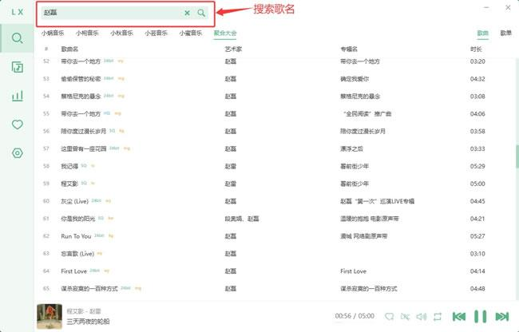

洛雪音乐快速上手问答：它到底是什么？怎么装？音源怎么配？
整理一篇关于洛雪音乐的快问快答——从软件定位、跨平台安装、音源配置到搜索播放的实际体验，覆盖新手最关心的 8 个问题。
整理一篇关于洛雪音乐的快问快答。适合刚听说这个软件、想先摸清楚底细再决定要不要装的人。
洛雪音乐到底是什么？一句话说清
洛雪音乐是一款开源的跨平台音乐播放器，支持 Windows、macOS、Linux 三大桌面系统。它本身不自带任何版权音源，而是通过用户自定义的音源脚本去聚合各个公开平台的音乐资源。换句话说，它更像一个"音乐聚合前端"——壳子是这个播放器，里面填什么内容由你自己决定。它的官网上写得很清楚，因为是开源项目，没有广告、不收集用户数据，也不做付费墙。如果你对播放器的控制权有要求，希望能自己管音源、自己管数据，而不是被某个大厂的曲库锁死，那这个定位就很对路。
谁适合用？谁可能不太需要
适合的人群有三类。第一类是已经有自己常用音源脚本的老玩家，换平台或者想换个播放器壳子，洛雪的开放 API 让接入和自动化都很方便。第二类是不想在各大音乐 App 之间反复横跳、希望一个客户端搞定搜索和播放的人。第三类是折腾党——它的开放 API、SSE 实时推送、支持 Web Widget 和智能家居集成，这些对喜欢自己写点小东西的人来说是加分项。不太需要的人是那些只听大厂主流曲库、对客户端体验没有特殊要求的普通用户，直接用官方 App 反而更省心。
怎么装？跨平台安装路径速览
Windows 用户有两条路：推荐走 Setup 安装版，从官方下载拿到带 Setup.exe 后缀的安装包双击运行，默认安装到 C:\Users\<用户名>\AppData\Local\Programs\lx-music-desktop，过程一路下一步就行，装完有自动更新；如果不想让软件写系统目录，或者需要 U 盘便携使用，选绿色便携版——.7z 压缩包解压后直接双击 lx-music-desktop.exe 启动，不需要管理员权限，但也没有自动更新。注意从 v2.5.0 起默认安装包不再支持 Win7/8/8.1，旧系统需要额外下载带 win7 标签的免安装版。
macOS 用户根据芯片选 dmg：Intel 芯片（2020 年前的 Mac）挑 x64 版本，Apple Silicon（M1/M2/M3/M4）挑 arm64 版本。双击 dmg 后把洛雪图标拖进 Applications 文件夹，首次启动如果被 Gatekeeper 拦截，进「系统设置 → 隐私与安全性」拉到底部点「仍要打开」。Linux 用户选择最多：AppImage 最通用（自包含、不需要 root、跨发行版），deb 适合 Debian/Ubuntu 系，rpm 适合 Fedora/CentOS/openSUSE，pacman 适合 Arch。
装完第一件事：为什么搜不到歌？
这是新手最容易踩的坑。不要急着打开软件搜歌——洛雪音乐默认没有任何内置音源，第一次打开搜索框输入什么都是空的，这是正常现象。你需要先配置音源脚本：在设置里找到音源管理入口，导入至少一个可用的音源脚本，初始化成功后勾选启用，搜索才有结果。音源脚本是社区维护的，可能会因为上游接口变化偶尔失效，如果发现之前能搜到的歌突然搜不到了，先检查音源初始化状态再考虑其他问题。
搜索和播放的核心逻辑是什么？
顶部搜索框固定在导航栏，支持三种搜索类型切换：歌曲、歌单、排行榜。输入关键词回车即搜，支持中英文混合，但用英文搜中文歌曲名可能搜不到结果，建议用歌曲的常用语言搜索。启用多个音源时，搜索结果会合并所有音源的返回，同一首歌可能出现多条记录（不同平台的版本），你可以点任意一条播放让调度器自动选音源，也可以在右键菜单手动指定。搜索历史可以在设置里清空，桌面端支持右键单条删除。

有没有开放 API？能做什么好玩的？
有。桌面版自带本地 HTTP API，默认监听 http://127.0.0.1:23330。除了常规的播放器控制（播放/暂停/切歌/音量），还支持 SSE 实时推送——比每秒轮询 /status 接口优雅得多。SSE 的用法是发起一个普通 GET 请求然后保持连接，播放器状态变化时（切歌、暂停、歌词滚动）服务器主动推送事件流。推送的事件类型覆盖 status、name、singer、lyricLineText 等十几个字段。
实用场景包括：写个桌面小组件实时显示当前歌曲和歌词；智能家居面板通过本地网络控制电脑上的洛雪；自己搭一个轻量的多端状态同步服务。完整接口列表可以在LXMusic文档里查到，curl 一条命令就能测试：curl -N http://127.0.0.1:23330/subscribe-player-status，终端会一直保持输出，每次播放器变化就推送新事件。也可以用 Python 的 requests 库加 stream=True 处理，或者前端用浏览器原生的 EventSource API 监听。
有什么常见坑需要提前知道？
三个。第一，音源脚本是社区维护的，不保证永久可用。某一天搜索突然空了，十有八九是脚本失效了，去相关社区找新版替换就行。第二，杀毒软件误报。开源软件的安装包被国内杀毒软件误报是常见情况，建议把安装包路径和安装目录加入白名单。第三，macOS 和 Linux 上的首次启动拦截。macOS 用 Gatekeeper 拦截，按上面说的去「隐私与安全性」点「仍要打开」就行；Linux 如果 Wayland 下界面空白，试试启动参数加 --enable-features=WaylandWindowDecorations 或者切到 X11 会话。
要不要付费？和同类播放器比怎样？
完全免费，开源项目，不做付费墙也没有广告。和同类播放器比，最大的差异点在开放 API 和音源机制——同类大多是固定曲库或者封闭式扩展，洛雪把音源控制权完全交给用户，开放 API 也让自动化和二次开发空间更大。代价是新手需要额外配置音源才能用，学习曲线比开箱即用的播放器陡一些。
项目的完整源码和音源脚本示例分别托管在GitHub、Gitee和GitCode，三份同步更新，国内朋友用 Gitee 或 GitCode 拉起来更快。
最后一句：如果你在意播放器的控制权和可扩展性，洛雪音乐值得装，装完花 10 分钟配好音源就能用了。